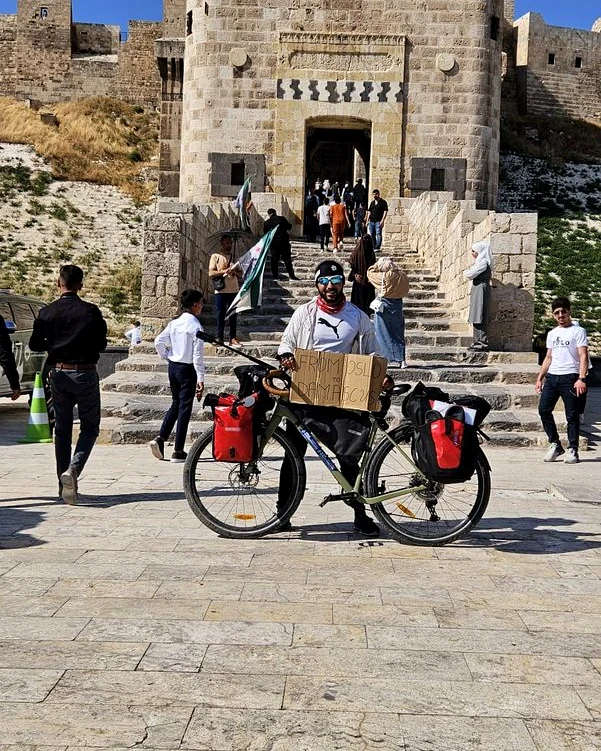
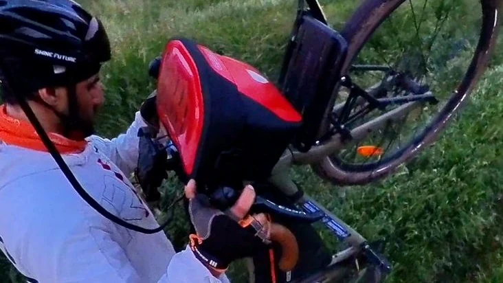
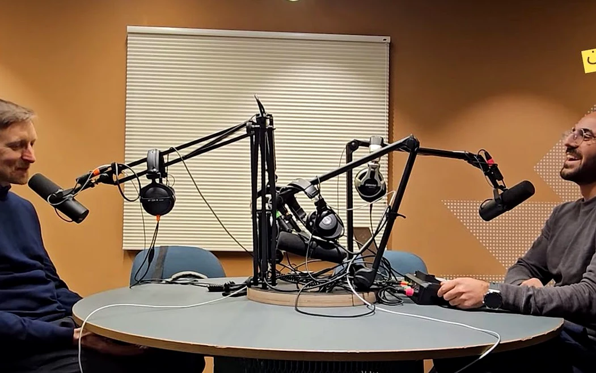
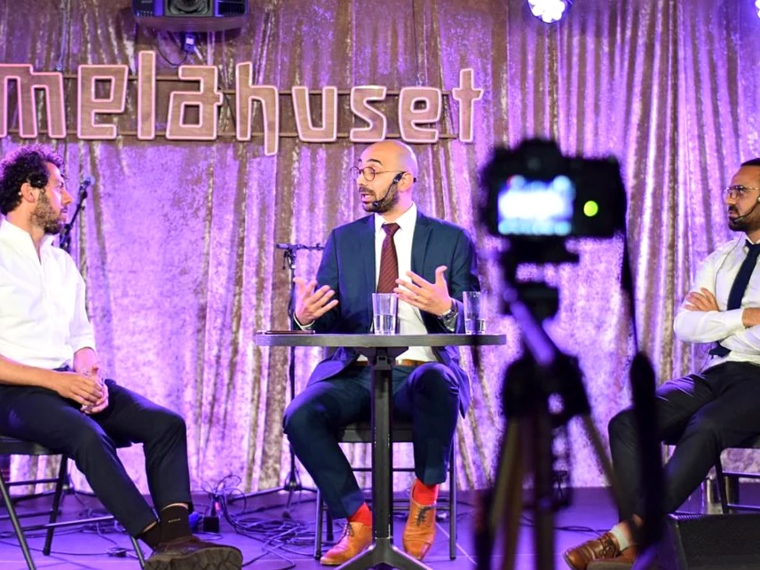
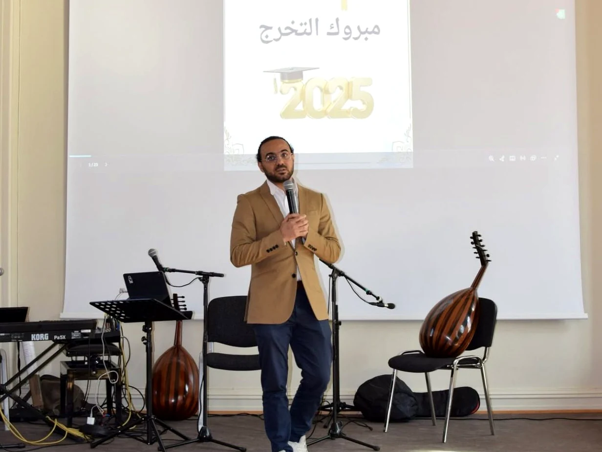
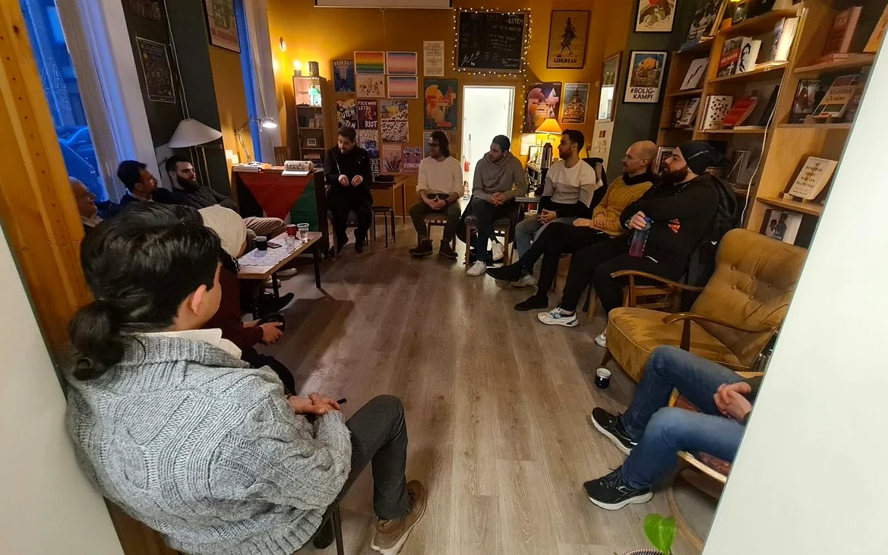

Risk-based test leadership, cross-team coordination and traceable execution in a legally complex, mission-critical programme.
QualityRiskDeliveryStakeholders
Oslo · Technology · Leadership · Stories
Solution consultant and project professional by work. Storyteller and community builder by instinct. I turn complex ideas into clear direction and ambitious stories into action.
Professional work
Selected work in regulated and complex environments, where quality, stakeholder alignment and confident delivery matter.
Risk-based test leadership, cross-team coordination and traceable execution in a legally complex, mission-critical programme.
Structured quality assurance across frontend, backend, interfaces and automation in the insurance domain.
Facilitated a multidisciplinary team and helped shape a decision basis for connected-car opportunities and data-driven services.
Signature project
A personal return journey became a public campaign for education, connection and hope.

The journey combined endurance, fundraising, partner coordination and real-time storytelling into one visible act of commitment.
Explore Cycling4Hope ↗
Media portfolio
Podcasting, public speaking and community projects that bridge language, research and lived experience.

17 episodes · Host · Producer
Arabic-language conversations that translate research and specialist knowledge about the Middle East into accessible dialogue.
Watch on YouTube ↗
Facilitator · Writer
Structured spaces for face-to-face disagreement, listening and civic trust.
Explore the initiative ↓
Speaker · Community builder
Talks, events and volunteer initiatives that turn ideas into shared moments.
Featured publication
A practical experiment in making open disagreement a civic habit.
“Dialogue builds trust where fear once ruled.”
The article documents dialogue meetings in Oslo and Trondheim, organized roughly every two weeks around questions of identity, justice, democracy, reconciliation and Syria’s future.

Education & credentials
University of Oslo
University of Oslo
Let’s connect
I’m interested in meaningful work where technology, delivery, communication and social impact meet.